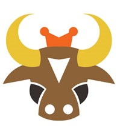

Ox

The main characteristics of an Ox are:
Strengths of an Ox
They are slow in action, but quite persistent. Once they make decisions, they will hold on straight to the end. Cautious and careful, before taking actions, they will take a long time for consideration. Stability is another characteristic in their personality, for they are hardly ever affected by the environment changes and others’ judgment. With strong faith and willpower, they can always realize their goals. Honest and patient, they are reliable companions and friends. Besides, they are independent and industrious, which makes them to achieve something easily. When handling cases, they can arrange everything orderly. They give much care and attention to family, being filial to parents and tender to brothers and sisters. They are peace lovers, and treat people equally.
Weaknesses of an Ox
One of their weaknesses is their stubbornness, for they can hardly change their minds to accept the advice of others. They usually do things based on their own slow pace. The lack of efficiency will result in an average outcome. They seem to be moody, actually fractious, obstructive and irritable. Due to their characteristic stiffness, they cannot react correctly according to outside changes. Remaining in a passive situation, they are tending to be loose and clumsy. In relationships, they have no sense of romance and no skill to please their lovers. Their speech is also blunt; they can be unaccustomed to speaking in public, which will make them quite nervous.